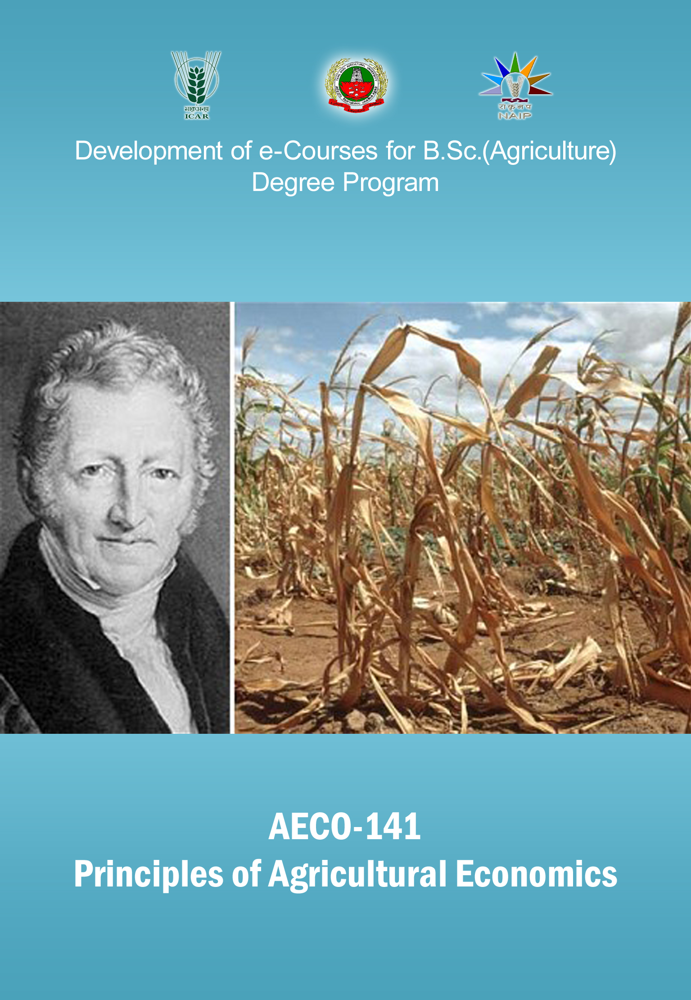

AECO141 PRINCIPLES OF AGRICULTURAL ECONOMICS ::
(2+0)

Select the lecture topic...
Lecture 01:
Economics – Definition & ..
Lecture 02:
Economic systems –
..
Lecture 03:
Theory of Consumer..
Lecture 04:
Ordinal approach -...
Lecture 05:
Demand –individual ..
Lecture 06:
Elasticity of demand – ...
Lecture 07:
Engel’s Law of family..
Lecture 08:
Production – factors ...
Lecture 09:
Capital - characteristics...
Lecture 10:
Supply-Law of ...
Lecture 11:
Graphical derivation of...
Lecture 12:
Market and its structure ...
Lecture 13:
Factor pricing ; rent -...
Lecture 14:
Macro economics ...
Lecture 15:
Money – Definition ...
Lecture 16:
Public finance - public ...
Syllabus